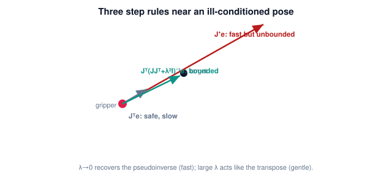

You are here
Module 5 — Inverse Kinematics · Unit 5 — Numerical Inverse Kinematics in Practice · Lesson 5.2 — The Jacobian-Transpose and Damped Least Squares
Lesson 5.2 — The Jacobian-Transpose and Damped Least Squares¶
The bare Newton step is fast but fragile where the Jacobian is ill-conditioned. This lesson adds two robust alternatives: the transpose step and damped least squares — the workhorses of practical numerical IK.
1. Why This Matters¶
Real targets sometimes sit near configurations where the pseudoinverse asks for enormous joint moves — the solver lurches or diverges. Production solvers avoid this with two tools: a dead-simple transpose step that can never blow up, and damped least squares, which keeps the fast behavior of Newton but stays bounded when conditions get bad. These are what make numerical IK trustworthy on a real arm.
2. Physical Intuition¶
Picture reaching toward a spot where your arm is nearly straight. To nudge your fingertip outward from there, the math wants a huge joint motion (the arm can barely move further out), so the naive correction overreacts. Damping says: "don't trust the aggressive move; take a gentler, bounded step in the same general direction." The transpose step is even more cautious — it just pushes the joints along the direction that reduces error, guaranteed downhill, never exploding, though it can be slow. Both trade a little speed for not falling off a cliff.
3. Mathematical Foundations¶
Error \(\mathbf e\), Jacobian \(J\).
Jacobian-transpose step. Replace the (pseudo)inverse with the transpose:
This is not the exact linear solve, but \(J^\top\mathbf e\) always points in a direction that reduces the error (it is the negative gradient of \(\tfrac12\|\mathbf e\|^2\)). So with a small enough \(\alpha\) it can never diverge — it is a gradient-descent step. Cost: no matrix inverse at all (cheap), but convergence is linear (slower), and \(\alpha\) needs tuning.
Damped least squares (Levenberg–Marquardt). Add a damping term \(\lambda^2 I\) inside the inverse:
The \(\lambda^2 I\) keeps the matrix invertible and bounds the step even when \(JJ^\top\) is nearly singular. The damping factor \(\lambda\) interpolates between the two extremes:
- \(\lambda \to 0\): recovers the pseudoinverse (fast, Newton-like) — use when well-conditioned.
- \(\lambda\) large: behaves like a scaled transpose step (gentle, stable) — use near trouble.
A common practice is to increase \(\lambda\) when the Jacobian is poorly conditioned and shrink it otherwise, getting Newton speed in the open and transpose-like safety near the edges. Damped least squares is the most widely used practical numerical IK step for exactly this reason.
(Why \(JJ^\top\) becomes nearly singular — the geometry of lost directions — is recognized in Lesson 6.1; its full theory, including the singular values that \(\lambda\) is really regularizing, is Module 6.)
4. Visual Explanation¶

5. Engineering Example¶
When the greenhouse arm reaches a fruit near the edge of its workspace (arm almost straight), the bare pseudoinverse would command a violent joint swing. The controller uses damped least squares with a \(\lambda\) that rises as the configuration gets ill-conditioned, so the gripper eases onto the fruit instead of lurching. Away from the edge, \(\lambda\) drops and the solver regains Newton speed. One step rule, safe everywhere.
6. Worked Example¶
Planar 2-link near full extension, \(J\) nearly singular (\(\det J \approx 0\)), error \(\mathbf e = (0.02, 0)\) outward.
- Pseudoinverse: \(J^{-1}\mathbf e\) has a huge component (dividing by \(\det J \approx 0\)) — a wild step.
- Transpose: \(\alpha J^\top\mathbf e\) is small and points downhill — safe but inches forward.
- Damped (\(\lambda = 0.1\)): \(J^\top(JJ^\top + 0.01 I)^{-1}\mathbf e\) — the \(0.01 I\) floor keeps the inverse finite, so the step is moderate and aimed at the target.
The damped step is the one a real solver takes here. (The notebook computes all three at a near-singular pose and shows the pseudoinverse magnitude exploding while the damped step stays bounded.)
7. Interactive Demonstration¶
Guided prediction. Reuse the Lesson 5.1 convergence stepper mentally: pick a target near full extension and predict that the pseudoinverse step's magnitude spikes while a damped step stays moderate. Predict the effect of raising \(\lambda\) from \(0\) (Newton) to large (transpose-like): faster vs gentler. Confirm the trade-off in the notebook.
8. Coding Exercise¶
Run the hands-on notebook
modules/module05/notebooks/M05_U05_L5_2_Transpose_Damped_Least_Squares.ipynb — open in JupyterLab and run Kernel → Restart & Run All.
Implement step_transpose(J, e, alpha), step_pinv(J, e), and step_dls(J, e, lam). At a near-singular planar pose, compute all three and show \(\|\Delta\boldsymbol\theta\|\) for the pseudoinverse blowing up while transpose and damped stay bounded. Then write ik_dls(target, theta0, L1, L2, lam=0.05, ...) and confirm it converges where the bare Newton step struggles.
9. Knowledge Check¶
Formative — unlimited attempts, immediate feedback; does not affect your grade.
Checks on the transpose update (downhill, stable), the DLS formula, and the role of \(\lambda\).
10. Challenge Problem¶
Show that \(J^\top\mathbf e\) is the negative gradient of the cost \(C(\boldsymbol\theta) = \tfrac12\|\mathbf p_{\text{target}} - f(\boldsymbol\theta)\|^2\) with respect to \(\boldsymbol\theta\). Use this to explain why the transpose step always reduces the error for small enough \(\alpha\), and why damped least squares reduces to it as \(\lambda \to \infty\) (up to scale).
11. Common Mistakes¶
- Believing the transpose step solves \(J\Delta\boldsymbol\theta=\mathbf e\) exactly — it only goes downhill.
- Setting \(\lambda\) to zero near a singularity (recovers the unstable pseudoinverse).
- Leaving \(\lambda\) large everywhere (always slow); it should adapt.
- Forgetting the transpose step still needs \(\alpha\) tuning.
12. Key Takeaways¶
- Jacobian-transpose: \(\Delta\boldsymbol\theta = \alpha J^\top\mathbf e\) — gradient descent, always stable, slower.
- Damped least squares: \(\Delta\boldsymbol\theta = J^\top(JJ^\top + \lambda^2 I)^{-1}\mathbf e\) — bounded everywhere, tunable via \(\lambda\).
- \(\lambda \to 0\) recovers the pseudoinverse (fast); large \(\lambda\) acts like the transpose (safe).
- DLS is the practical default; it stays well-behaved near ill-conditioned configurations (recognized in Lesson 6.1).
AI Learning Companion¶
Copy any prompt below into ChatGPT, Claude, or another AI assistant.
Tutor prompt — explain it another way
Re-explain Lesson 5.2 (Module 5) — the Jacobian-transpose and damped least squares steps — and why they are more robust than the bare pseudoinverse near ill-conditioned configurations. Keep the Jacobian as solver machinery; don't go into singularity theory (Module 6).
Practice prompt — generate more exercises
Give me 5 exercises comparing the pseudoinverse, transpose, and damped-least-squares joint steps for a planar 2-link arm near full extension. Include answers and the effect of λ.
Explore prompt — connect it to the real world
Show me how damped least squares (Levenberg–Marquardt) is used in real robot IK solvers and how the damping factor is adapted in practice.
Global Learning Support¶
Need this lesson explained in another language? Copy one of the prompts below into an AI assistant. English remains the authoritative source.
Supported languages (initial): English · Español · 中文 (Simplified Chinese) · Türkçe
Español
I just completed Lesson 5.2 (Module 5) — The Jacobian-Transpose and Damped Least Squares.
Explain this lesson in Spanish. Keep robotics and mathematical terminology in English when appropriate.
Then provide: a summary, three practice questions, and one challenge problem.
中文 (Simplified Chinese)
I just completed Lesson 5.2 (Module 5) — The Jacobian-Transpose and Damped Least Squares.
Explain this lesson in Simplified Chinese. Keep mathematical notation unchanged.
Then provide: a summary, three practice questions, and one challenge problem.
Türkçe
I just completed Lesson 5.2 (Module 5) — The Jacobian-Transpose and Damped Least Squares.
Explain this lesson in Turkish. Keep robotics terminology in English where commonly used.
Then provide: a summary, three practice questions, and one challenge problem.
Next lesson: 5.3 — Convergence, Step Size, and Failure Modes.